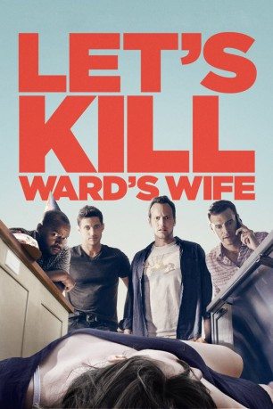

#8140 Let's Kill Ward's Wife
 
 IMDB-Wertung: 5.4 / 10
IMDB-Wertung: 5.4 / 10  Metascore: 0
Metascore: 0 
Ward hat es in seiner Beziehung alles andere als leicht. Seine Frau behandelt ihn wie einen Fußabtreter und kommandiert ihn herum wo sie nur kann. Kein Wunder also, dass auch Wards Freunde sie auf den Tod nicht ausstehen können. Doch was passiert wenn aus einem harmlosen Gespräch unter Freunden ein Mordplan gesponnen wird, um Ward aus den Klauen seiner Frau zu befreien? Heißt es nicht, dass jeder mit genau einem Mord davon kommen kann? Als makaberer Scherz abgetan, war die Sache eigentlich erledigt, als ein unglücklicher Unfall die Dinge in eine ganz andere Richtung lenkt. Bald schon stehen Ward und seine Gang einem ganzen Haufen nicht gerade alltäglicher Probleme gegenüber, die es zu bewältigen gibt, um den Kopf nochmal aus der Schlinge zu ziehen.
Jahr: 2014
Dauer: 82 Minuten
FSK: 16
Land: USA Studio: Tribeca FilmTonspuren: DTS - ,
Untertitel:
Auflösung: 1080p (1920x808) Größe: 3256 MB
Genre: Komödie, Krimi
Regisseur:  Scott Foley
Scott Foley
Drehbuch: Scott Foley
Soundtrack: John Spiker
Darsteller:
- Amy Acker als Gina
- James Carpinello als Ronnie
 Dagmara Dominczyk als Stacy
Dagmara Dominczyk als Stacy- Marika Dominczyk als Amanda
 Donald Faison als Ward
Donald Faison als Ward- Scott Foley als Tom
 Greg Grunberg als Bruce
Greg Grunberg als Bruce- Alex Bretow als Birthday Guest
- Joe Hardesty als Jimmy
- Jeanine Harrington als Cute Runner Girl
 Karl Makinen als Police Officer 1
Karl Makinen als Police Officer 1- Jennifer McComb als Mom
- Nicollette Sheridan als Robin Peters
 Patrick Wilson als David
Patrick Wilson als David- Reid Cox als Waitress (uncredited)
- Ava Carpinello als Lily
- Veronika Dominczyk als Barrista
- Keller Foley als Charlie
- Nia O'Neal als Ramone
- Chip Sickler als Police Officer 2
- Kalin Wilson als Percy Simpson
- Destiny Soria als Birthday Guest (uncredited)
Datei: X:\2014(G-M)\Let's Kill Ward's Wife (2014, FSK16, 1920x808).mkv seit 31.01.2018
Festplatte: HD 2013(I-Z)-2014(A-Z)
 Es gibt insgesamt 136 Filme in der Gruppe '2014(G-M)'
Es gibt insgesamt 136 Filme in der Gruppe '2014(G-M)'